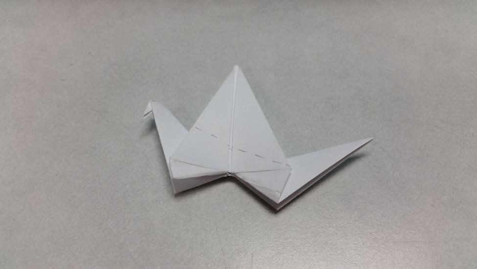
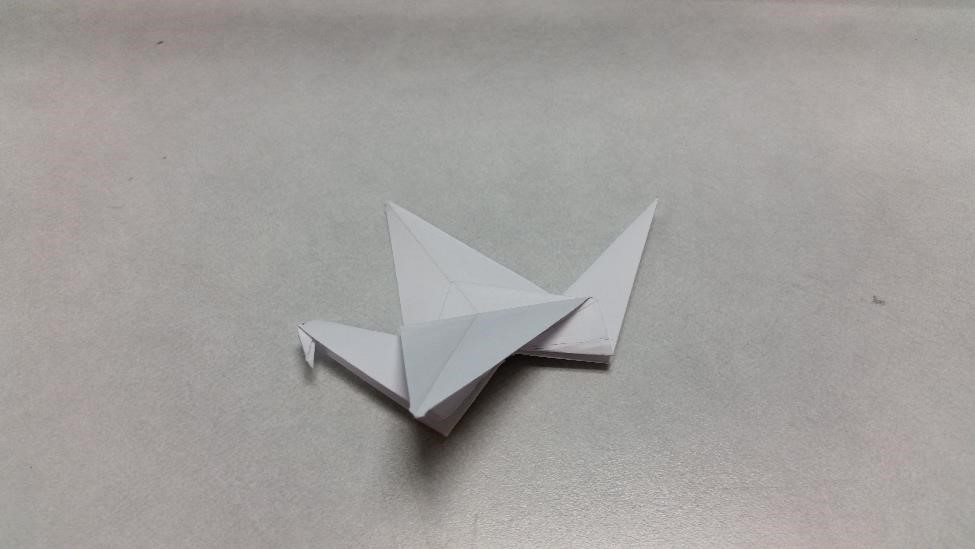
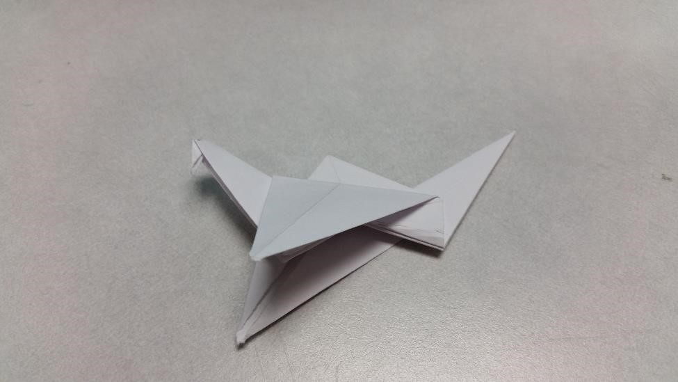

The Origami Flapping Bird
This relatively simple flapping bird is easy to make and can provide
hours of joy to children and adults alike! Learn how to make it below!
Step One: First Folds
Starting with a bird base, fold up the legs as shown.
Make sure that the folded edges remain flush
Step Two: Making the Neck and Tail
Next, unfold the previous folds. On one side, reverse one of the folds and tuck
the leg in. Repeat with the other leg.
Step Three: Adjusting the Tail
Next, choose a side to become the tail, and pivot the leg so that the corner is in the
middle of the leg. Check the diagram:
Step Four: Folding the Head
With the side you chose to be the neck, open and fold down the tip so it stick out as
the head. Then, close the neck:
Step Five: Fold the Wings Down.
Next, you will need to fold the wings along the guidelines.
  Step Six: Fly!
Next, you will unfold the creases you just made on the wing and hold where the stars are in
the photo. Gently pull the tail out to make the bird flap!

There you have it! You have made the flapping bird!
Starting with a bird base, fold up the legs as shown.